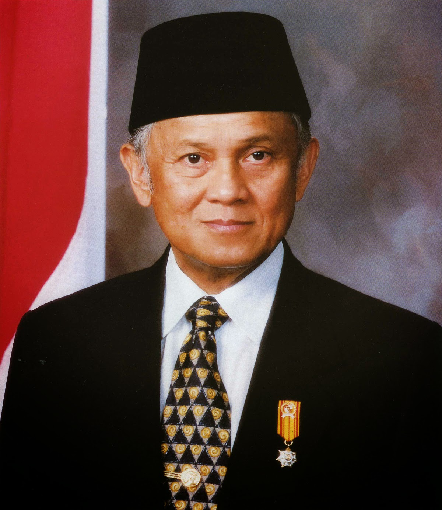
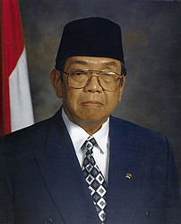

Basic Card
Card Title
Kemudian daripada itu untuk membentuk suatu pemerintah negara Indonesia yang melindungi segenap bangsa Indonesia dan seluruh tumpah darah Indonesia dan untuk memajukan
kesejahteraan umum, mencerdaskan kehidupan bangsa,
dan ikut melaksanakan ketertiban dunia yang berdasarkan
kemerdekaan, perdamaian abadi dan keadilan sosial, maka disusunlah kemerdekaan kebangsaan Indonesia itu dalam suatu Undang-Undang Dasar negara Indonesia,
yang terbentuk dalam suatu susunan negara Republik Indonesia yang berkedaulatan rakyat dengan berdasar kepada :
Ketuhanan Yang Maha Esa,
kemanusiaan yang adil dan beradab,
persatuan Indonesia, dan kerakyatan yang dipimpin oleh hikmat kebijaksanaan dalam permusyawaratan/perwakilan,
serta dengan mewujudkan suatu keadilan sosial bagi seluruh rakyat Indonesia.
Card Title
Kemudian daripada itu untuk membentuk suatu pemerintah negara Indonesia yang melindungi segenap bangsa Indonesia dan seluruh tumpah darah Indonesia dan untuk memajukan
kesejahteraan umum, mencerdaskan kehidupan bangsa,
dan ikut melaksanakan ketertiban dunia yang berdasarkan
kemerdekaan, perdamaian abadi dan keadilan sosial, maka disusunlah kemerdekaan kebangsaan Indonesia itu dalam suatu Undang-Undang Dasar negara Indonesia,
yang terbentuk dalam suatu susunan negara Republik Indonesia yang berkedaulatan rakyat dengan berdasar kepada :
Ketuhanan Yang Maha Esa,
kemanusiaan yang adil dan beradab,
persatuan Indonesia, dan kerakyatan yang dipimpin oleh hikmat kebijaksanaan dalam permusyawaratan/perwakilan,
serta dengan mewujudkan suatu keadilan sosial bagi seluruh rakyat Indonesia.
Image Card

Soeharto
Soeharto adalah Presiden RI yang ke 2

BJ Habibie
BJ Habibie adalah Presiden RI yang ke 3

KH. Abdurrahman Wahid
Gusdur adalah Presiden RI yang ke 4